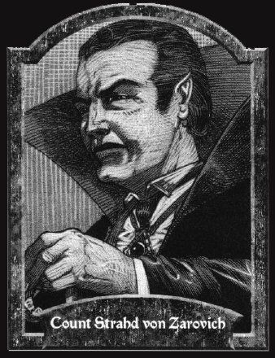

斯托德・凡・泽尔维奇伯爵
上古中型人类吸血鬼（Male human ancient vampire），战士4级/亡灵巫师16级
挑战等级：24
体形：中型亡灵（站立时6英尺1英寸）
生命骰数：20d12（154）
先攻权加值：+8
速度：50尺
防护等级：31，接触18，措手不及27
攻击：+19（近战，抨击，1d6+7附带能量吸取）或者+24/+19/+14（近战，巨剑+4，1d10+13）或者+15/+10/+5（远程，力量[18]复合长弓+2，1d8+6）
特殊攻击：吸血，夜之子，命令不死生物，产生衍体，支配，能量吸取，法术
特性：变换外形，20点寒冷抗力，20点闪电抗力，60尺黑暗视觉，魔宠（哨蝠[Sentinel Bat]，见《黑暗的住民》），快速医疗6，气化形体，白昼水面（Light Sleep），魔域领主（Master of the Realm），蛛行，驱散抗力+9，不死生物，吸血鬼弱点，法术抗力15
阵营：混乱邪恶
豁免：坚韧+12，反射+12，意志+18
属性：力量24，敏捷18，体质－，智力20，感知17，魅力18
技能：炼金+10，唬骗+15，攀爬+12，专注+5，安抚动物+9，躲藏+14，威吓+7，跳跃+12，知识（神秘）+10，知识（历史）+10，知识（地方）+10，知识（自然）+10，知识（皇室和贵族）+10，知识（乌阁堡）+10，聆听+16，潜行+14，表演（舞蹈，曼陀林，管风琴，笙，竖笛，讲故事）+7，骑乘+9，搜索+15，观言察色+14，法术辨识+10（辨识死灵系法术时视为+12），侦察+16
专长：警觉，盲斗，战斗施法，战斗反射，制造魔杖，制造奇物，闪避，擅长异种武器（巨剑），寓守于攻，法术延时，精通先攻，快速反射，法术极效，强力攻击，灵活移动，法术瞬发，抄录卷轴，法术专攻（死灵系），武器专攻（巨剑），武器专精（巨剑）
语言：巴罗克语（Balok）*，��崆语（Darkonese），龙语，卢克塔语（Luktar），摩登特语（Mordentish），瓦哈斯语（Vaasi）
每日法师法术：5/6/6/6/6/5/4/4/3。基础DC 15+法术等级，死灵系法术DC 17+法术等级。禁止学派：附魔系。
法术书：
0级，全部。
1级，燃烧之手，惊恐术，冻寒之触，通晓语言，封门术，，魔法飞弹，防护善良，衰弱射线，电爪，隐形仆役。
2级，变身术，黑暗术，侦测思想，云雾术，食尸鬼之触，地面云雾（Ground Fog），隐形术，敲击术，物品定位术，群体惊恐术，粉碎音波，幽灵手。
3级，解除魔法，爆裂符文，火球术，遗体防腐术，造风术，死灵定身术，闪电束，回避侦测，雪雨暴，臭云术，巧言术，吸血鬼之触。
4级，秘法眼，疫病术，侦测探知，任意门，弱能术，恐惧术，冰风暴，引发兽化（Induce Lycanthropy），变形他人，变形自己，幽影咒法术，固化云雾（Solid Fog），冰墙术。
5级，操纵死尸，高等幽影咒法术，魔魂壶，梦魇，穿墙术，短讯术，心灵遥控，传送术，石墙术。
6级，防魔法力场，死亡法阵，触发术，操纵天气，铜墙铁壁，异界誓缚，阴魂咒法术，石化术。
7级，操纵死灵，延迟爆裂火球，死亡一指，魔力监牢，有限祈愿术，迷雾召唤术（Misty Summons），行影术，法术反转。
8级，复制后备，凋死术，迷宫术，魔法徽记。
所有品：巨剑+4，力量[18]复合长弓+2，反侦测定位校验项链（Amulet of proof against detection and location），防护手镯+6（视为护腕），抗力斗篷+3，水晶球，敏捷手套+2，元素防护戒指（主要防护火焰），防护戒指+4，吸收令牌。
消瘦而强壮，带着贵族的气质，斯托德就是这样一个令人印象深刻的角色。巴若维亚的魔域领主看上去棱角分明，他的目光不怒自威，他的声音深沉有力，他的动作优雅大气，他生来就是发号施令的。斯托德的皮肤苍白，但在饮用过鲜血后也会渐渐恢复些血色。
乌阁堡主最不寻常的特征就是那像精灵一样的尖耳朵。他有时会用垂下黑发遮掩，但更多的时候则伪称自己拥有精灵血统，除非他有意隐秘行动。当然，他锋利的长指甲同样惹人注目，所以他常常戴上手套来掩饰。斯托德的尖牙可以自由伸缩，所以通常人们不会看到它们。
斯托德的穿着打扮如同巴若维亚的贵族，偏爱使用黑色，并缀以红色和白色。他通常披着长披风，并佩戴有金色的项链，项坠则是一块红色的石头。
背景：
《斯托德手记》中记载了有关斯托德的部分背景情况（见《魔域设定集》第一章）。其中大部分都是事实，但斯托德本人当然有把自己令人发指的行为巧妙地加以粉饰。他与未知的存在（斯托德宣称，那就是死亡本身）订下契约，用弟弟的鲜血署上自己的名字。斯托德不仅仅诅咒了他自己，不仅仅诅咒了巴若维亚，还间接地影响了整个世界。离开了斯托德，魔域会是今天这个样子么？不管这个问题的答案如何，斯托德毫无疑问是对魔域影响最大的人物。
自从那个时候起，斯托德走上了邪恶的不归之路，同时他的实力也在渐渐成长。他成为了一名强大的亡灵巫师，掌握了魔域这个牢笼的许多秘密。他与核心区域的其他强者或敌或友，一起改变着魔域。当然，最值得一提的就是他与伊娃夫人（Madame Eva）之间的联盟，以及与巫妖阿萨林（Lich Azalin）之间的恩怨。斯托德赐予维斯塔纳人随意通行的权利，用以交换情报。阿萨林是他曾经的仆人，现在则是他的心腹之患，他们之间的对抗可以追溯到 “大联合”的年代（the Grand Conjunction），那次阿萨林差点就消灭了斯托德，但乌阁堡主每次遇险最终都还是能够化险为夷。随着时间的推移，魔域这个世界在不停变化，但斯托德却始终存在，始终如一。
现状：
斯托德不常干预巴若维亚的事务，只是偶尔离开乌阁堡确保自己的子民能够严格遵守律令。他不关心子民的福祉，蔑视几乎一切生物，同时狂热地保卫自己的财产。巴若维亚和巴若维亚的子民全部都在他的掌控之下，哪个敢于违抗他的权威必将面对他愤怒的力量。
斯托德作为一名吸血鬼已经存活了四个世纪之久，在这段年月里，他懂得了如何用凡人无法做到的方式进行策划。他的计划从不像表面看起来那么简单，同时他也不会让任何人了解行动背后的真正动机。没有凡人能像他一样耐心，他甚至会在必要时和敌人比拼寿命。在内心深处，他仍然显得冷酷无情，在看到机会时，会以迅雷不及掩耳的速度消灭可能的威胁。
斯托德最大的弱点就是对塔提娅娜的爱，虽然从那种足以致死的高度跳下，但斯托德并没有发现她的尸首。在几个世纪里，巴若维亚出现过许多与塔提娅娜相仿的女孩。虽然她们都不使用那个名字，但斯托德相信，这些女人就是塔提娅娜的转世，他想要重新赢得塔提娅娜的芳心。但不幸的是，斯托德的每一次尝试都以失败而告终，每一次命运都会把女孩从他身边带走，每一次的失败都会让他的心灵再次受到重创。斯托德对于塔提娅娜几乎毫无办法。
战斗：
斯托德是最危险的魔域领主，结合了强大的实力和精明的头脑，很少有人能与乌阁堡主匹敌。他精通吸血鬼的力量，总是迅速而残忍地消灭敌人。斯托德不惧怕很多困扰着吸血鬼的弱点，这常常让想消灭斯托德的家伙大吃一惊。他同时也是一名卓越的亡灵巫师，魔法的力量让斯托德变得更加致命可怕。
虽然斯托德的个人实力在魔域强大无比，但却从不会鲁莽地陷入不必要的危险。他可以在瞬间召集大量手下，更多依靠动物，血仆或是魔法召唤物执行自己的计划。
特殊攻击：
夜之子（SU）：斯托德可以使用本能力召唤四十只座狼取代普通吸血鬼召唤来的狼，同时也可以使用本能力召唤1d10名斯托德僵尸或是2d10名斯托德骷髅（见《黑暗的住民》）
吸血鬼能力：对抗斯托德吸血鬼能力的豁免DC等于24。
特性：
魔域领主（SU）：在巴若维亚，斯托德可以使用一个随意动作关闭或开启老萨维利克大道（Old Svalich Road）上的两座大门。在乌阁堡中，他也拥有类似的，控制门窗的能力，同时还能感应到所有智力高于3的生物进出。另外，在巴若维亚，斯托德可以不需要专注控制自己的马车，如同他在掌驾。他也同时能感应到马车周围30尺范围内所有智力高于3的生物，以及这样的生物进出马车。
斯托德的触发术：斯托德通常会将触发术施展在自己身上，因此当他暴露在阳光下，会自动传送到山区的一个隐秘避难点。
吸血鬼弱点：大蒜，镜子和圣徽对斯托德而言毫无意义，同时他可以自由进出巴若维亚的任意建筑。斯托德可以在阳光下生存10轮，之后才会被消灭。如同其他吸血鬼一样，斯托德在阳光下只能使用部分动作。
据点：
斯托德的据点在核心区域最为知名。乌阁堡孤独地耸立在1000尺的山峰之巅。斯托德从不欢迎访客，自行闯入乌阁堡的家伙会发现这个地方到处都是血仆，亡灵以及各种类型的机关。在巴若维亚，经常有英雄闯入乌阁堡，试图消灭那里的主人，但从没有一个人得到过欢乐的结局。
关闭边境：
当斯托德想要关闭魔域时，一片浓密的云雾升起，围绕着巴若维亚。云雾的属性等同于围绕着巴若维亚乡村的窒息云雾。（见下文）
斯托德的窒息云雾：
围绕着巴若维亚乡村的环状云雾含有致命的毒性。通常情况下，云雾并不会升起，除非有人试图离开村庄。进入巴若维亚的村镇并不困难，但离开则完全不同。不免疫毒素的生物进入云雾边缘就会立即中风死亡（无豁免）。维斯塔纳人可以靠炼金术制造灵药（DC 25），服用后的生物在10分钟内可以免疫本效果。维斯塔纳人通常会将这种药剂卖给旅者并带领他们穿越云雾，并要求5枚金币作为报仇。吉奥吉欧（Giorgio）商人把这称为“俘虏税”，但没有维斯塔纳人，货物将无法在南巴林诺克（Southern Balinoks）流通。当然，维斯塔纳人决不会让吉奥吉欧人得到灵药的秘方，而且，如果斯托德要求他们拒绝哪家伙的请求，他们也绝对会毫不犹豫地照办。